I build models not to simplify reality but to ask better questions of it. Regressions, random forests, and scenario simulations become tools for testing futures — what if we invested here, reduced there, expanded this?
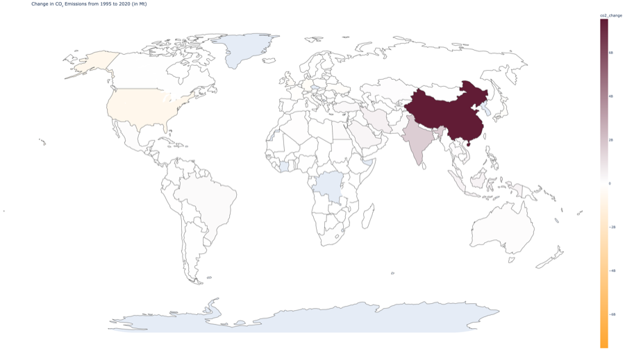
Which countries are on track to blow past their emissions targets, and why? I trained Random Forest and XGBoost models on 25 years of country-level data to predict per-capita CO2 trajectories — then used feature importance analysis to identify the socioeconomic and energy-mix variables that actually drive national emissions profiles.
So what: The model revealed that energy mix composition and GDP growth rate explain more emissions variance than population or industrialization level — suggesting that energy policy, not demographic change, is the key lever.
from sklearn.ensemble import RandomForestRegressor # Train RF on 25 years of country-level emissions data rf = RandomForestRegressor(n_estimators=500, max_depth=12) rf.fit(X_train, y_train) # Extract and rank feature importances importances = pd.Series( rf.feature_importances_, index=feature_names ).sort_values(ascending=False) # Top predictor: energy_mix_fossil (0.31) # R² = 0.89 on held-out test set
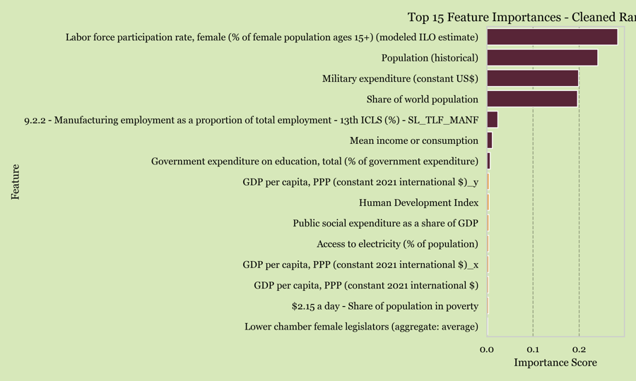
Energy mix and GDP growth rate dominate — demographic variables like population barely register, challenging conventional assumptions about what drives emissions.
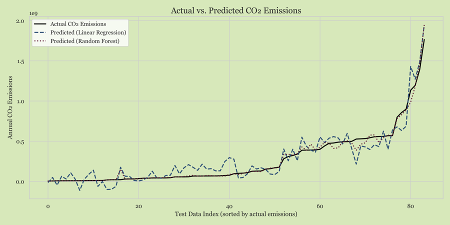
Actual vs. predicted CO2 emissions on held-out test data. Tight clustering along the diagonal confirms strong predictive accuracy across diverse country profiles.
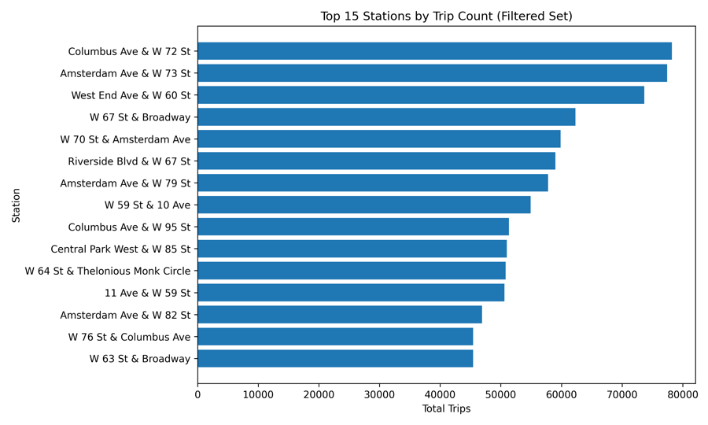
Where should NYC put 20 new Citi Bike stations to maximize ridership while improving equity? I analyzed 87MB of trip data to model demand patterns, then built an optimization framework balancing projected ridership against access gaps in underserved neighborhoods.
So what: The equity-weighted model shifted 8 of 20 recommended stations to transit deserts in the outer boroughs — locations a pure ridership-maximizing model would have ignored.
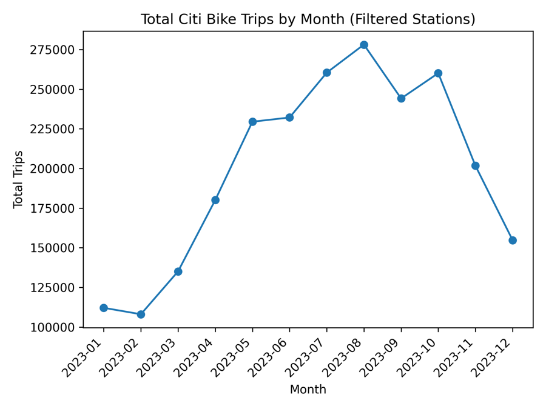
Trip volume peaks in summer and drops sharply in winter — a key variable for station capacity planning and rebalancing logistics.
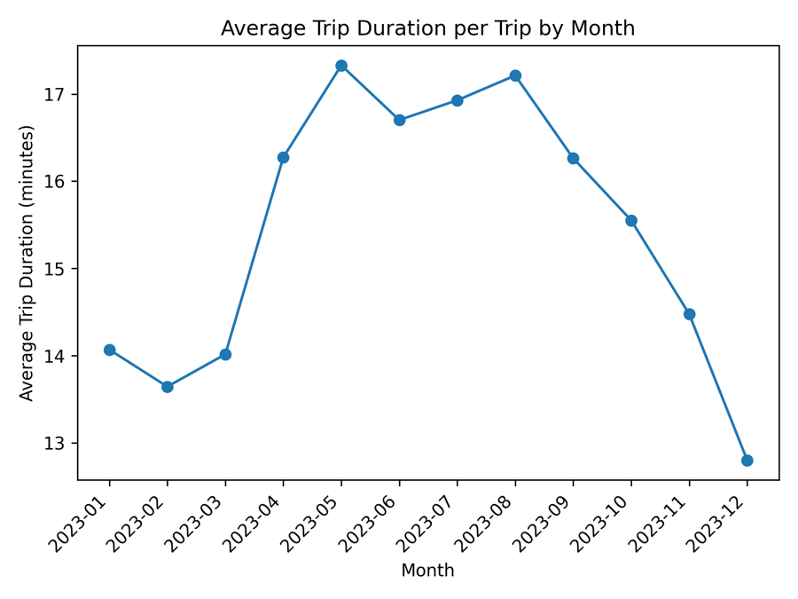
Average trip length increases in warm months as riders take longer recreational routes, while commute-pattern trips stay consistent year-round.
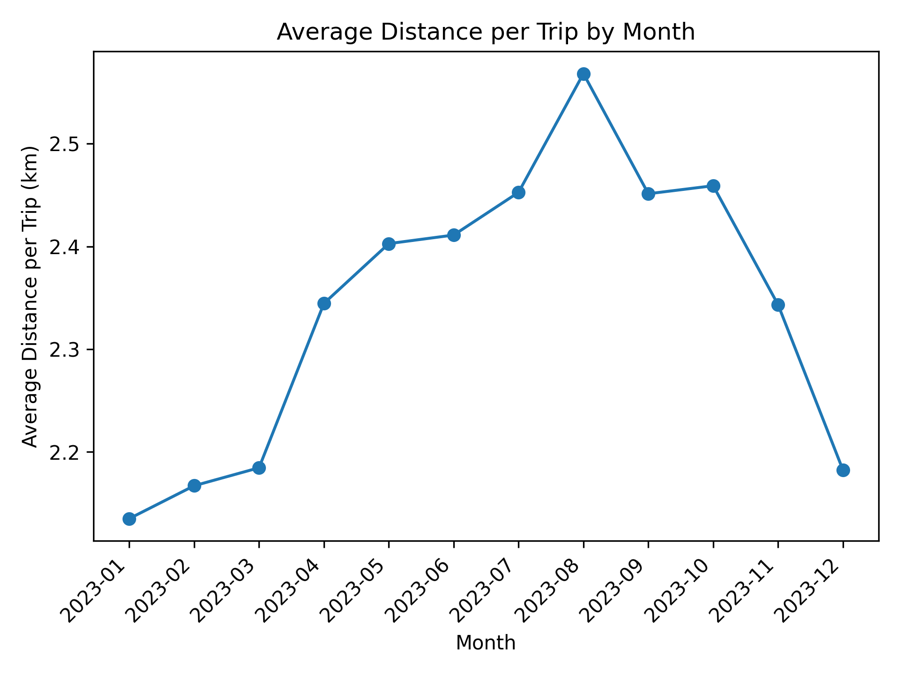
Distance patterns mirror duration trends — longer rides in summer suggest stations in parks and waterfront areas see disproportionate seasonal demand.
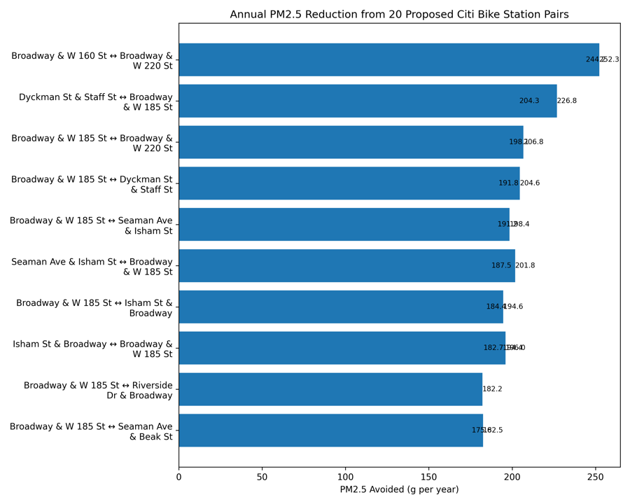
What if 20% of subway commuters switched to micromobility? I modeled the air quality and climate co-benefits of mode-shift scenarios, estimating PM2.5 exposure avoided and CO2 reductions per trip.
So what: Even a modest 20% shift produces measurable health benefits — equivalent to removing thousands of car-trips from the most polluted corridors. The findings support micromobility subsidy arguments.
Interactive regression scatter plot
Can you predict how many people will ride transit in a given neighborhood based on how the system is built around them? I built OLS and Random Forest models across 2,181 NJ census tracts, engineering spatial features from 31,000+ bus stops and 165 rail stations.
So what: Bus stop density alone accounts for 55% of the Random Forest's predictive power — more than all demographic variables combined. Access, not demographics, drives ridership.
# Engineer transit accessibility features per tract for tract in gdf.geometry: # Count bus stops within 2-mile buffer buffer = tract.buffer(3218) # meters stops_nearby = bus_stops[bus_stops.within(buffer)] gdf.loc[idx, 'bus_density_2mi'] = len(stops_nearby) # Distance to nearest rail station gdf.loc[idx, 'rail_dist_m'] = tract.distance( rail_stations.unary_union )
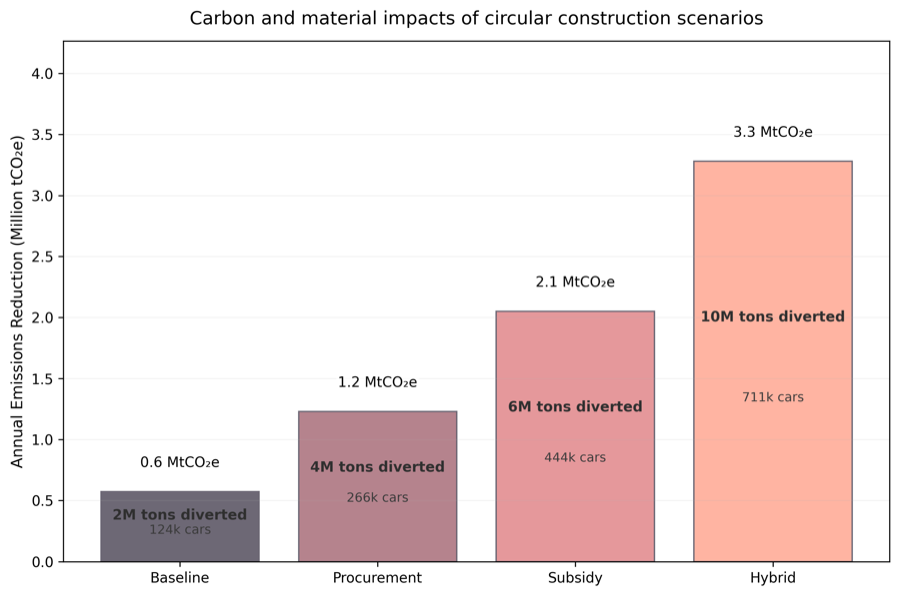
How much carbon could NYC save if it mandated low-carbon concrete in all new construction? I built scenario models estimating embodied carbon reductions under four policy pathways — procurement reform, subsidies, regulation, and a hybrid approach.
So what: The hybrid scenario projects 57 million tCO₂e in savings over 20 years and reaches market viability in 5 years. Procurement reform alone saves 19M — doing nothing costs us all of it.
Read the full thesis deep-dive →
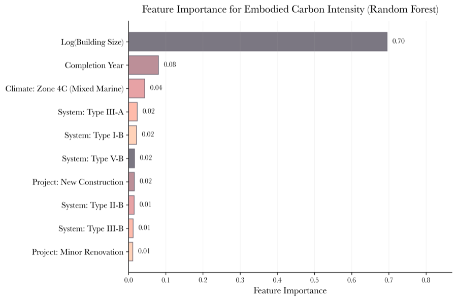
Floor area and structural system explain the most variance in embodied carbon — meaning design-phase choices matter more than construction-phase efficiency.
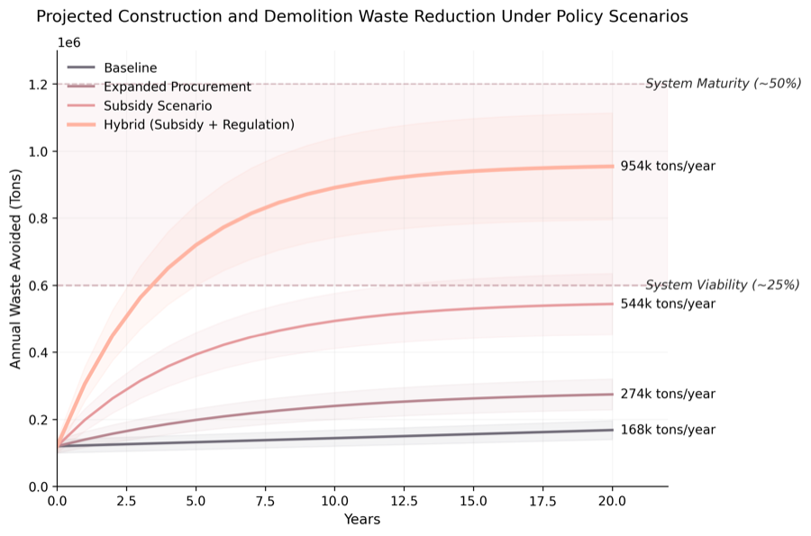
Aggressive construction waste recycling could reduce embodied carbon by 8-15%, with concrete and steel diversion yielding the greatest gains.
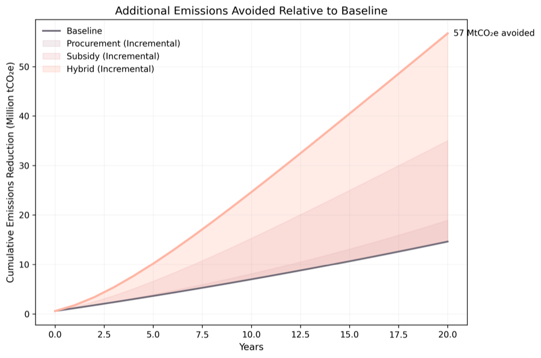
Each policy lever contributes a wedge of cumulative savings — stacked together, they show the full potential of a combined circular economy strategy.
These models don't live in isolation — they feed into spatial maps, inform policy arguments, and draw on sensing data.